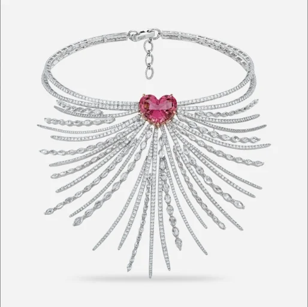

A gemstone like no other
The stone that wore another's name.
From the depths of the East African belt, spinels emerge — dazzling for their beauty and their durability. Royalty and nobility were captivated by them, and took them for rubies on the strength of the hue alone.
352Carats, British Crown Jewels
The famous mistake
Catalogued as a ruby
The stone given by the King of Spain in the fourteenth century, and worn as a ruby ever since, is a spinel — all 352 carats of it.
Spinel's crystal structure was said to resemble a thorn on a rose, and for that it was carried as a guard against fire and evil spirits.
8
Mohs hardness
Single
Refractive
None
Treatment
August
Birthstone
The tray
Seven stones, seven notes
01 — Baguette
Pink spinels are scarce, and the good ones are startling: vivid pastel pink with a touch of fuchsia, held by a single refractivity and an exceptional transparency.
02 — Radiant
Nothing is done to them. No heat, no treatment — the colour on the tray is the colour that came out of the ground.
03 — Cushion
An 8 on the Mohs scale. Hard enough to be worn rather than kept, which is the point of it.
04 — Heart
Its crystal habit is an octahedron — two pyramids fused at the base. But it is the Mahenge spinels of Tanzania that have taken the imagination.
05 — Pear
The neon glow is chromium and iron. Limited supply and a growing recognition of what the stone actually is have carried prices upward.
06 — Round
August's birthstone. Red, pink, blue and black, and long held to stand for strength and protection.
07 — Trillion
The legends give it calm, and clear thinking under pressure. Whether or not you hold with that, the stone has outlasted everyone who believed it.
Choose a stone
Crystal habit
Two pyramids, fused
Spinel grows as an octahedron. It is the shape that told the old miners they had something other than a ruby, long before anyone could say why.
Mahenge
The hills behind the road
The Mahenge pocket in southern Tanzania gave up spinels of a pink nobody had a word for, and the market has been chasing them since.
Held for their beauty, and long credited with healing. Both claims have survived the centuries about equally well.

The other stones
Back to the World of Preciousness